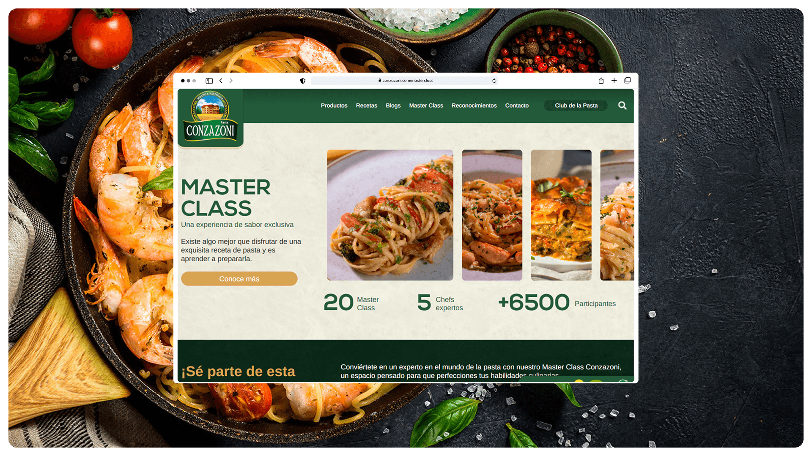
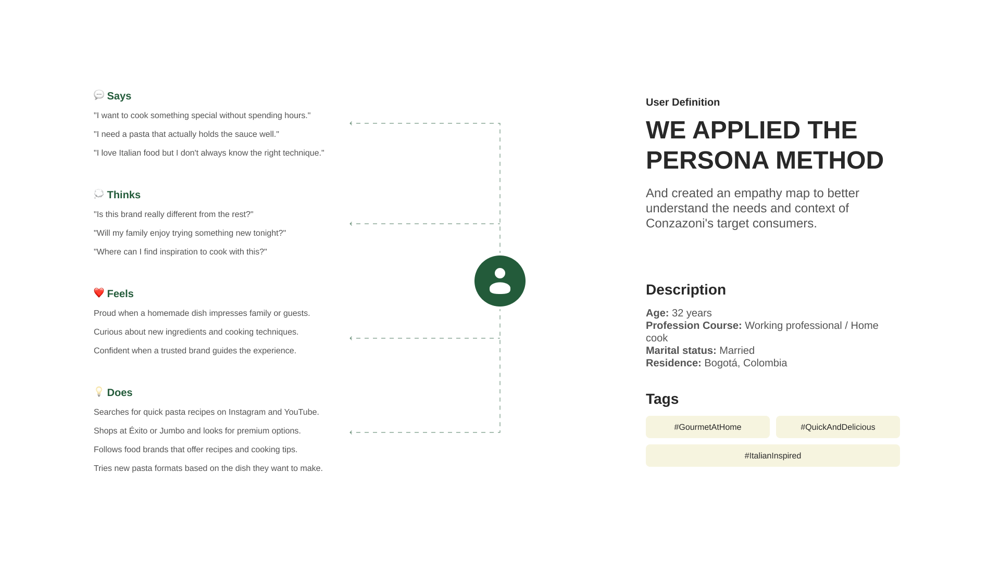
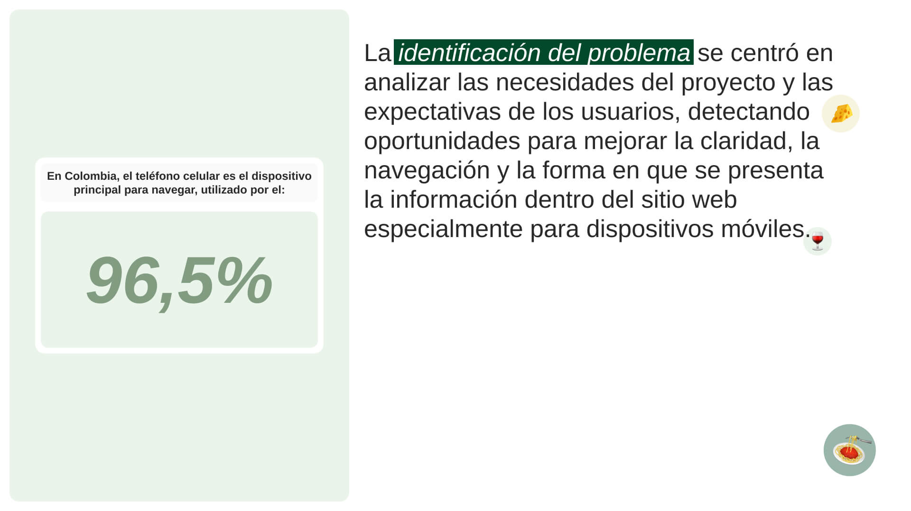
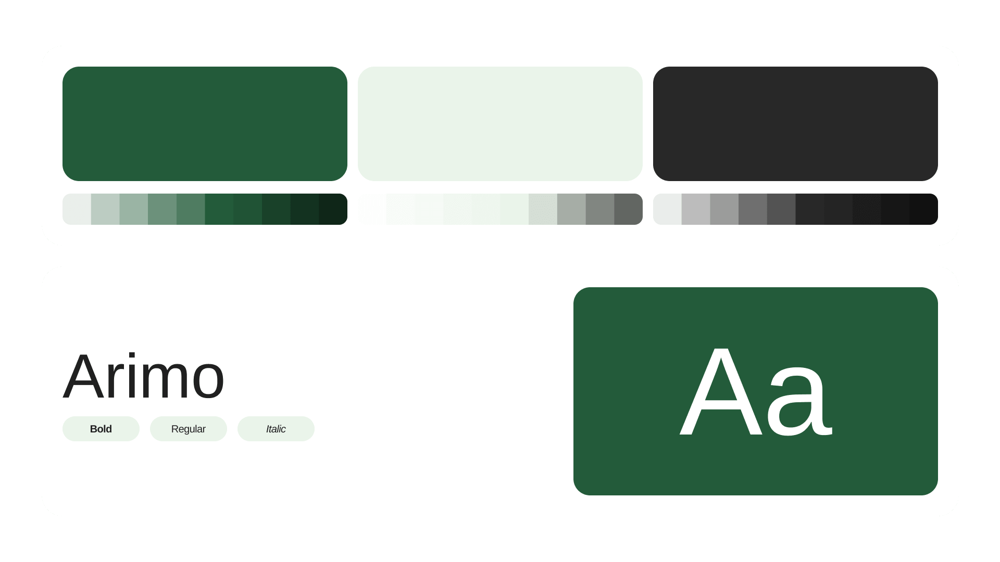
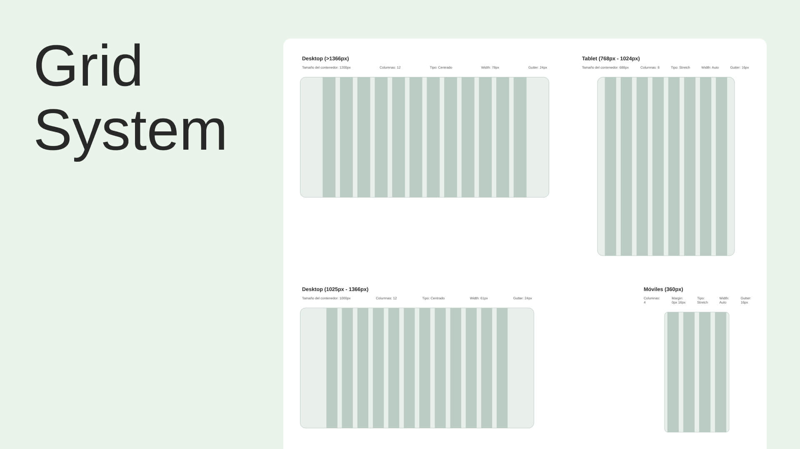
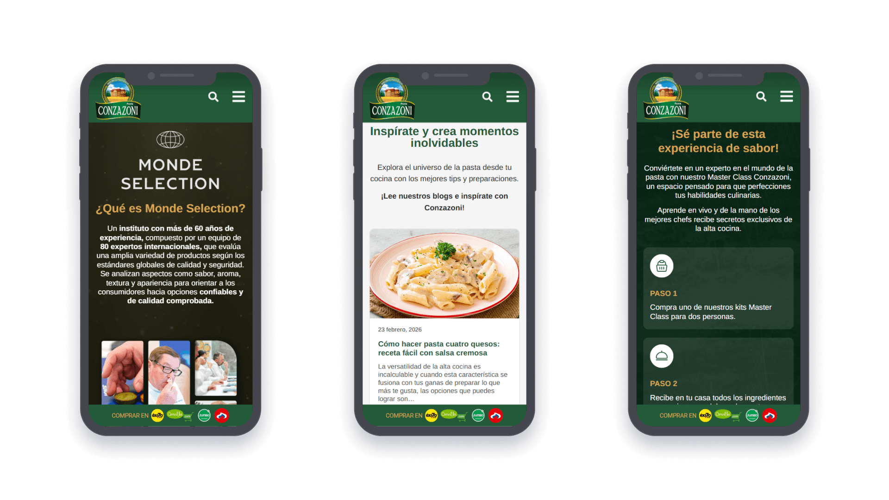
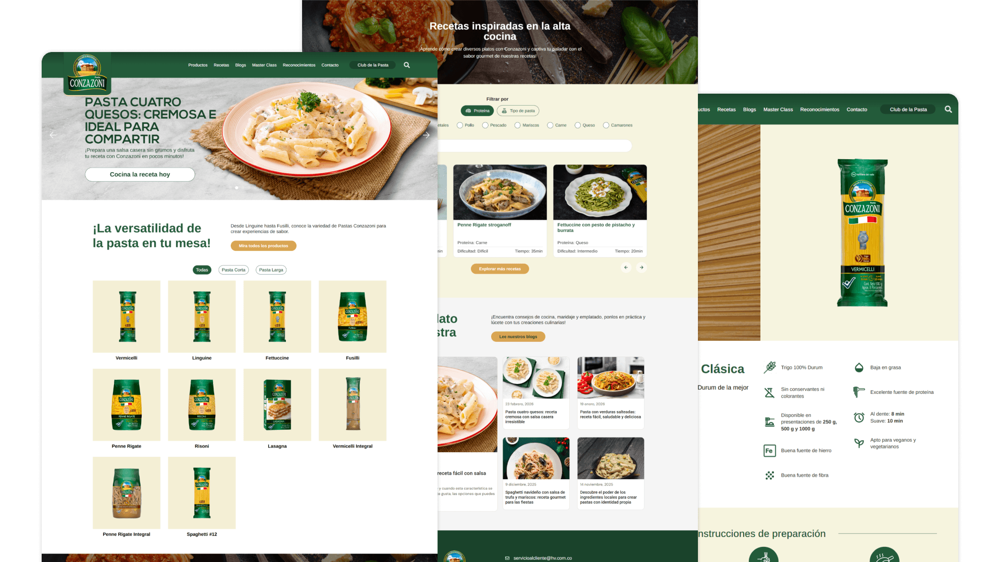

Conzazoni
Website redesign for a premium Colombian pasta brand — making gourmet cooking accessible to everyday homes.

Conzazoni is a premium Colombian pasta brand, part of the HV group, available in major retail chains including Éxito, Carulla, Jumbo and Olímpica. Beyond the product catalog, the brand has built a rich content ecosystem — recipes, a blog, Master Classes and the Club de la Pasta — positioning itself as a culinary reference for pasta lovers in Colombia.
Goal
Redesign the website to better reflect Conzazoni's premium positioning and make it easier for visitors to navigate the product catalog, discover recipes and engage with the brand's content — all while communicating quality and culinary inspiration from the first scroll.
My role
I was responsible for the full UX/UI design of the redesign — from research and information architecture to visual direction, UI design and prototype delivery. The project was handed off to the development team for implementation.
Audience
Conzazoni's audience is primarily urban Colombian consumers who enjoy cooking at home and are looking to elevate their everyday meals. They value quality ingredients, appreciate Italian gastronomy, and want cooking to feel approachable — not intimidating.
Home cooks — working professionals and families who cook regularly and want inspiration beyond basic recipes. They discover new dishes through Instagram and YouTube, and expect a food brand's website to guide them the same way.
Gastronomy enthusiasts — people who follow food culture closely, attend cooking events or take classes, and look for brands that match their level of curiosity and taste. The Master Class and Club de la Pasta sections speak directly to them.
Designing for both groups meant the website needed to feel premium and editorial without being cold — warm, inviting and content-rich, but always easy to navigate.


Research
I started by auditing the existing website to identify friction points and opportunities. I also benchmarked premium food brands internationally — looking at how they structure product catalogs, integrate content and guide users from discovery to purchase intent.
Key findings that shaped the redesign:
- The original site had a content-heavy structure that made it hard to navigate — too many sections competing for attention without a clear hierarchy.
- Recipes were the most visited section, but they weren't visually prominent — users had to dig to find them. Elevating recipes to the home page was a clear opportunity.
- The product catalog lacked context — formats and cooking times were listed, but users had no guidance on which pasta to choose for which dish.
- The brand's content ecosystem (Master Class, Club de la Pasta, blog) was a strong differentiator, but it wasn't communicated as such — it felt like an afterthought rather than a core pillar.
- Mobile browsing dominated — every layout had to work first on small screens.
Visual explorations
Conzazoni had a well-established brand identity — warm, Italian-inspired, with a sense of culinary craftsmanship. The challenge was translating that into a digital experience that felt modern and editorial without losing the warmth that connects with a Colombian audience.
I explored different directions for the homepage hero: full-bleed food photography with bold type overlays, product-forward layouts, and lifestyle-focused compositions. The winning direction led with food photography — because nothing communicates appetite appeal better than a well-shot plate.
For the product catalog, I tested card formats, list views and filterable grids before arriving at a clean, scannable layout that highlights the pasta format, size variants and cooking time — the three details users actually need to decide.


Final design
The redesigned website restructures the experience around three clear pillars: products, recipes and community. The home page leads with appetite — a strong hero featuring food photography and the brand's #ExperienciaDeSabor positioning — then flows naturally into the product catalog, featured recipes and content sections.
The recipe section was elevated to a content hub, with filtering by protein and pasta type, making it easy to find the right dish for any occasion. Each recipe card uses photography to do the selling, with just enough metadata (difficulty, time) to help users decide at a glance.
The Master Class and Club de la Pasta sections were redesigned to communicate value clearly — turning what were previously buried pages into destination sections that reinforce Conzazoni's position as a culinary brand, not just a pasta manufacturer.


Learnings
Working on a food brand taught me that hierarchy is everything in content-heavy websites. When a site tries to show everything at once — products, recipes, blog, events, clubs — nothing stands out. The real design work here was editorial: deciding what deserved attention on the home page and what should live deeper in the navigation.
It also reinforced how much photography carries the experience in food. The best-structured layout still falls flat with weak imagery. Part of the design work was framing compositions and recommending photo directions that would make the final product feel alive — not just well-organized.
See the result ↗